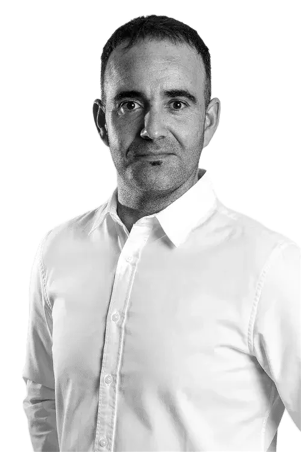
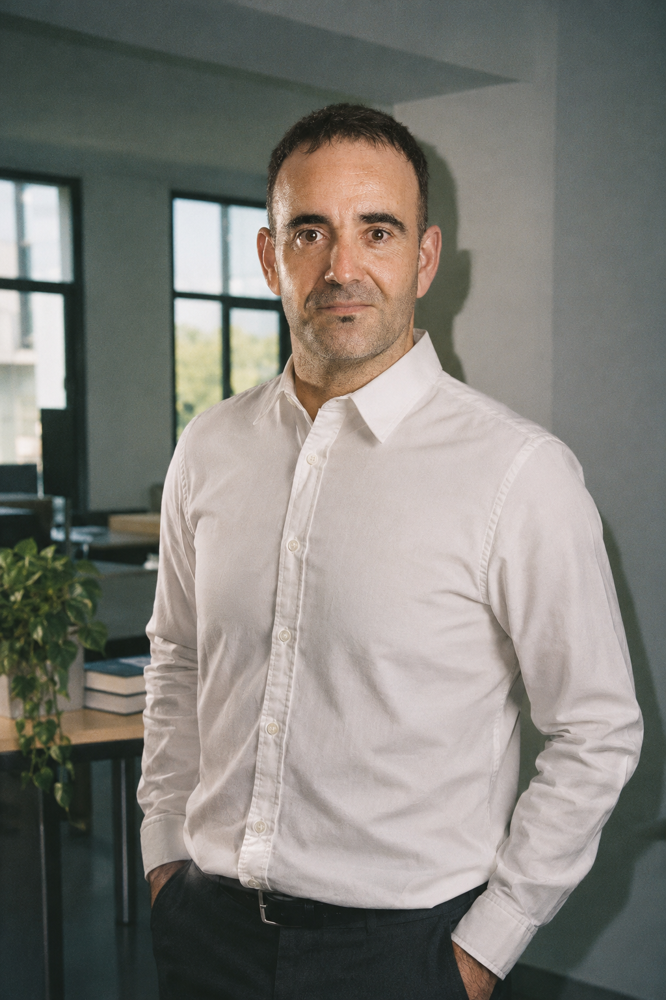
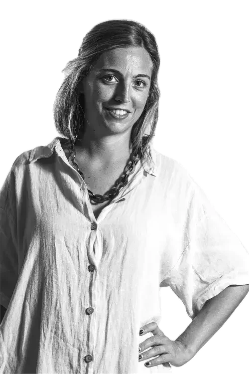
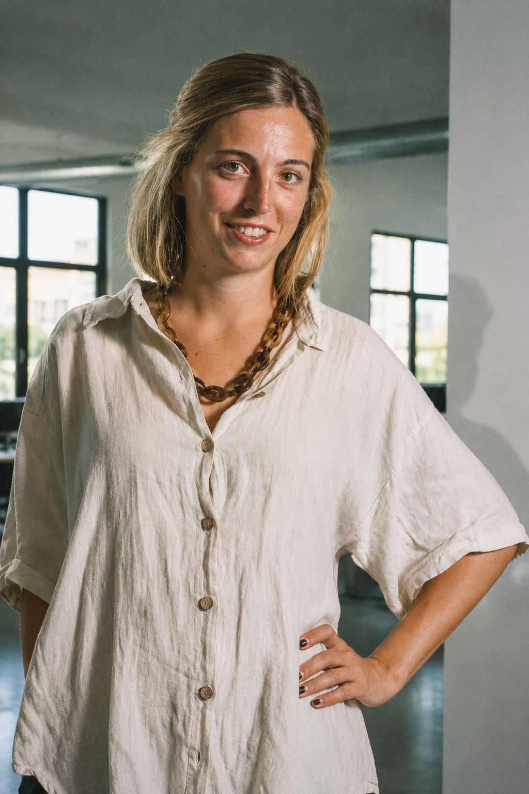
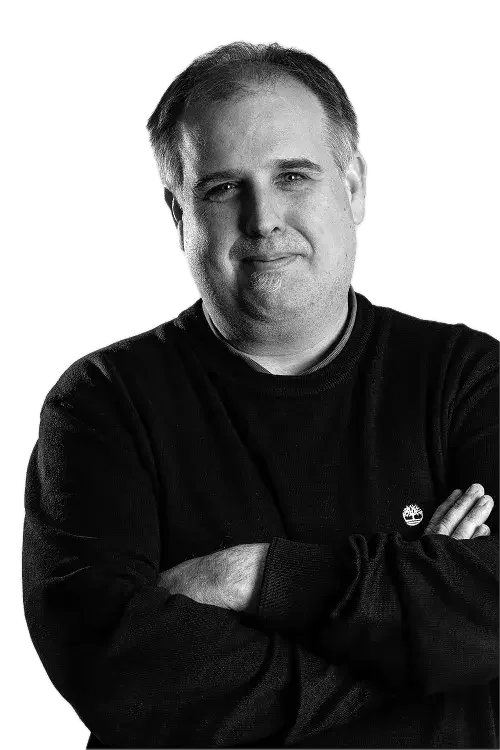
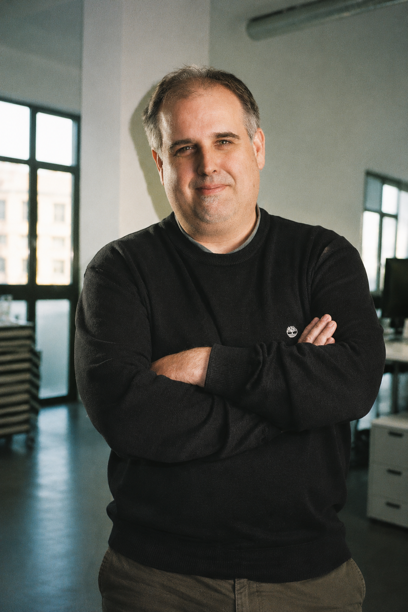
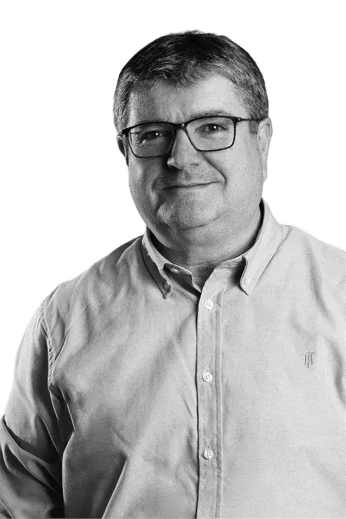
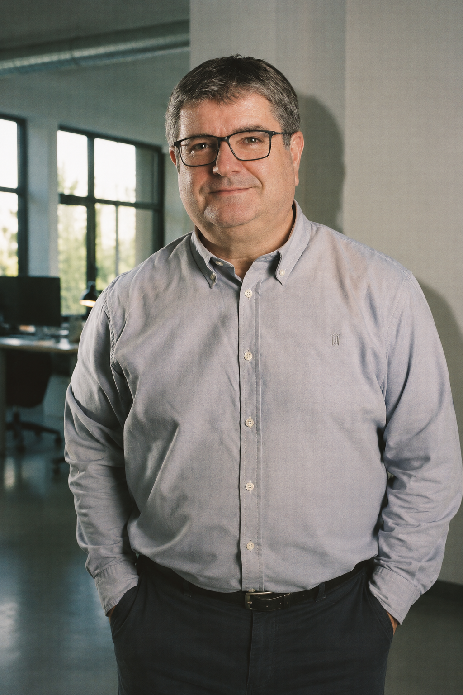
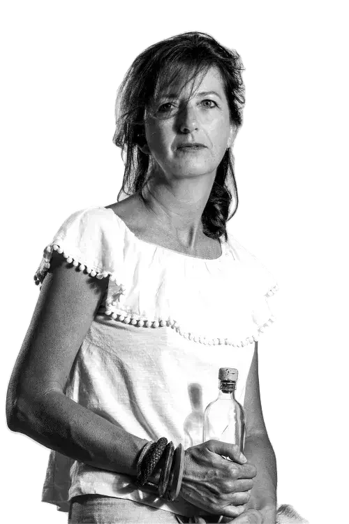
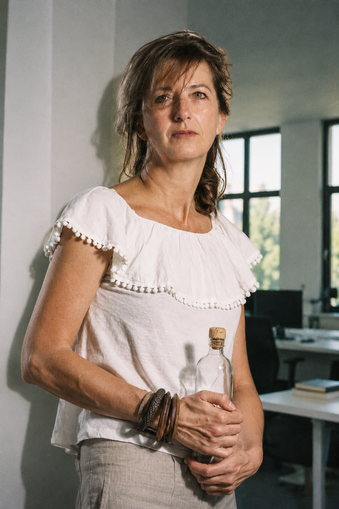

Retratos · prueba 01
Cinco retratos con un tratamiento inspirado en el marquee: flash directo, piel cálida, sombras frías y grano analógico. Color y fondos reinterpretados con IA a partir de los originales en blanco y negro. Prueba independiente, sin sustituir las fotos de Nosotros.
Referencia del marquee
Benardo Elorz

Original
Prueba · marqueeAnia Olarra

Original
Prueba · marqueeGaizka Menchaca

Original
Prueba · marqueeAlberto Quintanilla

Original
Prueba · marqueeMajo Carreras

Original
Prueba · marquee